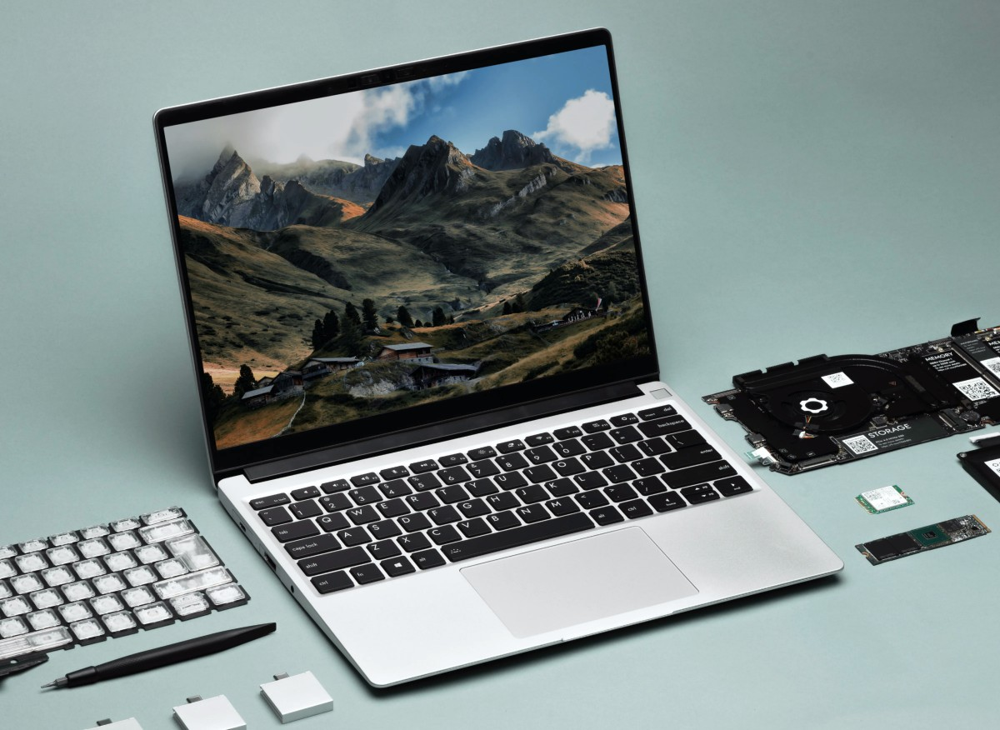
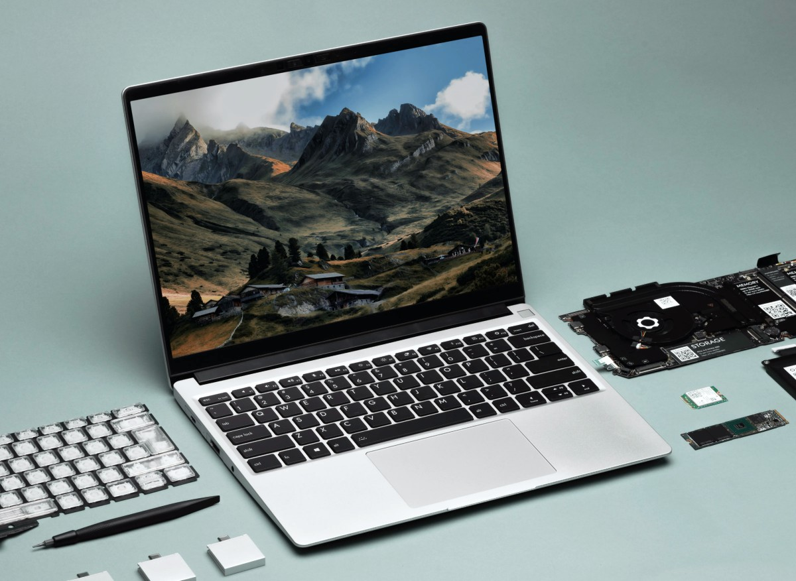

ABOUT ME

DIPU DAS
A laptop, laptop computer, or notebook computer is a small, portable personal computer (PC) with a screen and alphanumeric keyboard. These typically have a clam shell form factor, typically having the screen mounted on the inside of the upper lid and the keyboard on the inside of the lower lid, although 2-in-1 PCs with a detachable keyboard are often marketed as laptops or as having a laptop mode. A laptop, laptop computer, or notebook computer is a small, portable personal computer (PC) with a screen and alphanumeric keyboard. These typically have a clam shell form factor, typically having the screen mounted on the inside of the upper lid and the keyboard on the inside of the lower lid, although 2-in-1 PCs with a detachable keyboard are often marketed as laptops or as having a laptop mode. A laptop, laptop computer, or notebook computer is a small, portable personal computer (PC) with a screen and alphanumeric keyboard. These typically have a clam shell form factor, typically having the screen mounted on the inside of the upper lid and the keyboard on the inside of the lower lid, although 2-in-1 PCs with a detachable keyboard are often marketed as laptops or as having a laptop mode. A laptop, laptop computer, or notebook computer is a small, portable personal computer (PC) with a screen and alphanumeric keyboard. These typically have a clam shell form factor, typically having the screen mounted on the inside of the upper lid and the keyboard on the inside of the lower lid, although 2-in-1 PCs with a detachable keyboard are often marketed as laptops or as having a laptop mode.


 
